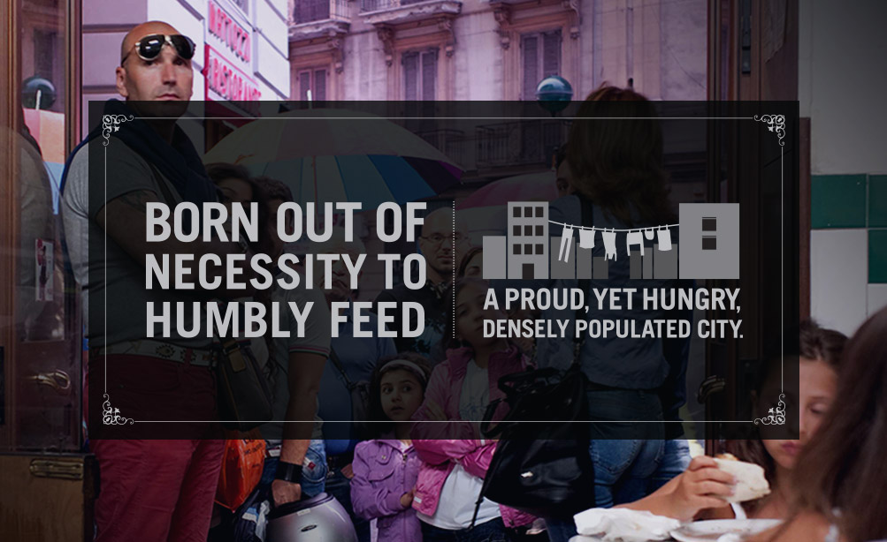
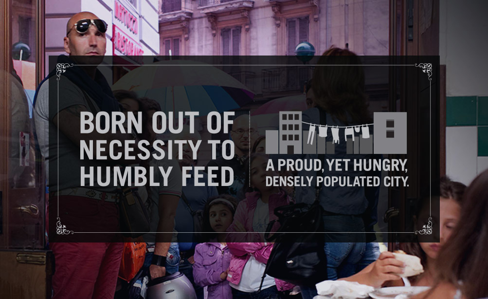
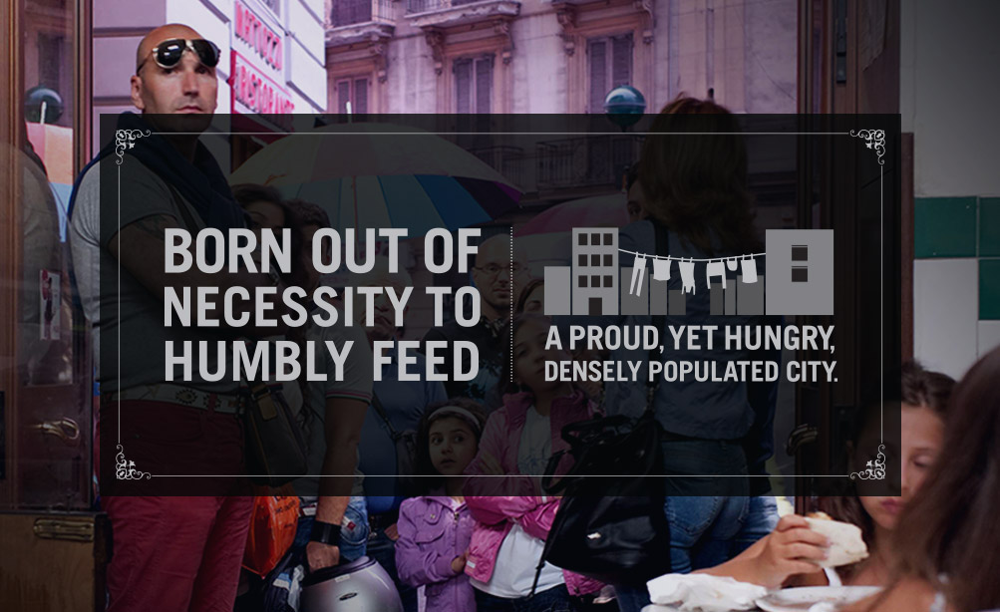

#tgif Great day for an Italian lunch. Two hours long and includes some vino. Reminder, we don't close on Fridays open from 11:30 till close. pic.twitter.com/IAnhVJ4a - (1 day ago)
menu
Pick one of our favorite classics or build your own, starting with house-made hand-streched dough or an arugula base and then top with exceptional ingredients.
neapolitan classics
Pizza known for being topped with just the right amount of each ingredient, with a base of only tomato sauce, only mozzarella, or both.
These flavorful pizzas are the topping combinations that are familiar to most, on a base of both tomato sauce and mozzarella.
cheese
tomato sauce / mozzarella
pepperoni
tomato sauce / mozzarella / pepperoni sausage
veggie
tomato sauce / mozzarella / mushroom / red onion / tomato / green pepper / olive
supreme
tomato sauce / pepperoni / sausage / mushroom / red onion / green pepper
create your own
drinks
inspiration

about
The original Pizzeria Locale opened in Boulder in 2011.
It was the result of founders Lachlan Mackinnon-Patterson and Bobby Stuckey’s culinary travels throughout Italy and years of fine dining experience. Now, they're opening a second Pizzeria Locale with a simplified menu and a revolutionary oven, cooking pizzas to a blistered perfection in under two minutes.


 
